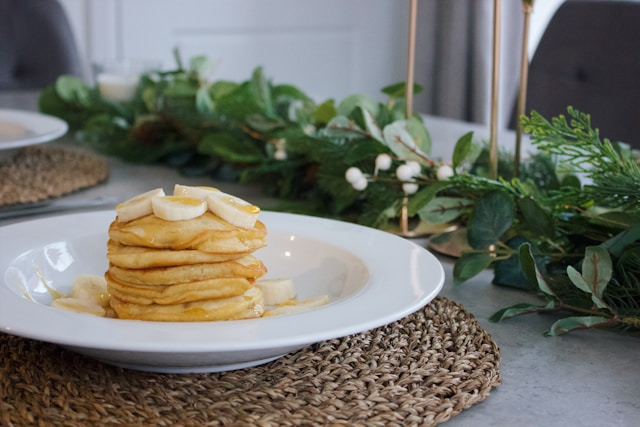

2 Ingredient Egg Banana Pancakes
Difficulty level: Easy

Why egg banana pancakes?
Everyone loves a pancake but not everyone loves the carb heavy recipes we often see such as the typical fluffy
American pancake so here is an option when you want to up your protein and healthy fats whilst staying grain
free.
Some characteristics:
-
Rich in Protein: Eggs are a complete protein source, containing all nine essential amino acids that the body
cannot produce on its own. By combining eggs with banana, you create a protein-rich pancake that can help
support muscle repair and growth, keep you feeling full and satisfied, and stabilise blood sugar levels.
-
Good Source of Potassium: Bananas are naturally rich in potassium, an essential mineral that plays a key
role
in regulating blood pressure, muscle function, and nerve transmission. Including bananas in your pancakes
can
contribute to your daily potassium intake and help maintain electrolyte balance in the body.
-
High in Fibre: While eggs are not a significant source of fibre, bananas contain dietary fibre, particularly
soluble fibre, which can promote digestive health, regulate bowel movements, and support feelings of
fullness.
Adding bananas to your pancakes can increase their fibre content and promote overall digestive wellness.
-
Natural Sweetness: Bananas add natural sweetness to pancakes without the need for added sugars or
sweeteners.
This can help satisfy sweet cravings in a healthier way and reduce the overall sugar content of your meal.
Plus,
the natural sugars in bananas provide a quick source of energy to fuel your day.
-
Gluten-Free and Grain-Free: For individuals with gluten intolerance or sensitivity, or those following a
grain-free diet, pancakes made with just eggs and banana offer a delicious alternative. They are naturally
free
from gluten and grains, making them suitable for people with celiac disease or gluten sensitivity, as well
as
those following paleo or grain-free diets.
-
Slow Release of Energy: Unlike traditional pancakes made with refined flour and sugar, pancakes made with
eggs and banana have a lower glycemic index (GI), meaning they cause a slower and more gradual increase in
blood
sugar levels after consumption. The combination of protein from eggs and fiber from banana helps slow down
the
absorption of glucose into the bloodstream, preventing rapid spikes and crashes in blood sugar levels. This
steady release of energy can help maintain stable energy levels throughout the day and reduce the risk of
experiencing fluctuations in mood and energy commonly associated with high-GI foods.
In summary, pancakes made with just eggs and banana provide a nutritious and wholesome breakfast option, packed
with protein, potassium, fiber, and natural sweetness, while also being gluten-free and grain-free. They can be
a satisfying and nourishing addition to a balanced diet.
Another nutritional reason to eat pancakes made with just eggs and banana is their potential to support blood
sugar balance. By choosing pancakes made with eggs and banana, you can enjoy a delicious breakfast that supports
balanced blood sugar levels, providing sustained energy and promoting overall well-being.
Ingredients:
- 3 eggs;
- 1 banana;
Optional extras:
- cinnamon;
Toppings:
- Plain live yoghurt or coconut yoghurt;
- Berries with a dollop of almond butter.
Intructions:
- Combine all ingredients;
- Blend in blender;
- Pour into pan - Cook for a minute or two either side until lightly coloured and serve;
- Serve topped with nut butter, yoghurt, berries, bee pollen, cacao, or even nitrate free bacon or avocado and
a sprinkle of chilli and Himalayan salt or a savoury version.